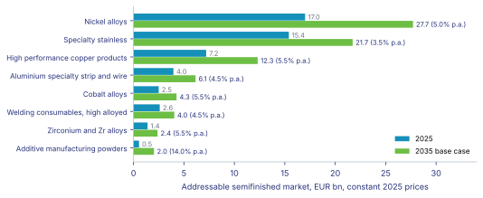

PROJECT STUDY
Product Strategy 2035Growth Strategy for High Performance Metals
Final reportConsulting team: Member 1, Member 2, Member 3, Member 4 | Technical University of Munich
November 2026
Table of contents
- Executive summary3
- 1 Introduction, central question and approach4
- 2 Phase I: Global metals data foundation5
- 2.1 Model architecture and sources5
- 2.2 Nickel and nickel alloys5
- 2.3 Cobalt alloys5
- 2.4 Zirconium5
- 2.5 Specialty stainless steels5
- 2.6 Aluminium and copper products5
- 2.7 Additive manufacturing powders and welding consumables5
- 2.8 Prices and supply risk synthesis5
- 3 Phase II: Sector analyses6
- 3.1 Automotive6
- 3.2 Oil and gas6
- 3.3 Environmental and energy technology6
- 3.4 Aerospace6
- 3.5 Chemical process industry6
- 3.6 Electronics and electrical engineering6
- 3.7 Medical technology6
- 3.8 Cross sector competitor map6
- 4 Phase III: From market analysis to strategy7
- 5 Conclusion8
- 6 Appendix: assumptions and model documentation9
- Test section9
Executive summary
1 Introduction, central question and approach
2 Phase I: Global metals data foundation
2.1 Model architecture and sources
2.2 Nickel and nickel alloys
2.3 Cobalt alloys
2.4 Zirconium
2.5 Specialty stainless steels
2.6 Aluminium and copper products
2.7 Additive manufacturing powders and welding consumables
2.8 Prices and supply risk synthesis
3 Phase II: Sector analyses
3.1 Automotive
3.2 Oil and gas
3.3 Environmental and energy technology
3.4 Aerospace
3.5 Chemical process industry
3.6 Electronics and electrical engineering
3.7 Medical technology
3.8 Cross sector competitor map
4 Phase III: From market analysis to strategy
5 Conclusion
6 Appendix: assumptions and model documentation
Test section
Global nickel mine output reached about 3.9 Mt in 2025 [1], and Indonesia supplied roughly two thirds of that volume, which shapes every price discussion in this report.
This is short. It has a dash — and a semicolon; here.

Source: team analysis [2][?BAD_ID]
References
- USGS: Mineral Commodity Summaries 2026: Nickel (2025). https://pubs.usgs.gov/periodicals/mcs2026/mcs2026-nickel.pdf Retrieved 2026-11-07.
- Team: Product Strategy 2035 market model (2025). model/model.py Retrieved 2026-11-07.